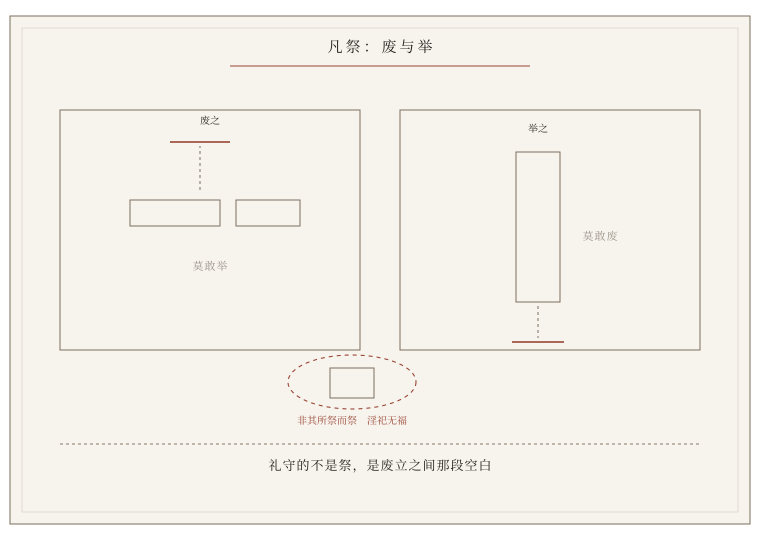

曲礼下 · 二·六十七 · 第 190 课
凡祭，有其废之，莫敢举也；有其举之，莫敢废也。非其所祭而祭之，名曰淫祀，淫祀无福。注「为其渎神也」「妄祭，神不飨」。
说什么事：祭的举与废，及淫祀之禁。
落在哪一层：礼，兼及礼意。论祭之边界。
为何编在此位：上节立等差，此节守边界。一开一阖。
【经】凡祭，有其廢之，莫敢舉也；有其舉之，莫敢廢也。非其所祭而祭之，名曰淫祀，淫祀無福。
【注】為其瀆神也。廢、舉謂若殷廢農祀棄，後不可復廢棄祀農也。後有德者繼之，不嫌也。妄祭，神不饗。
【疏】「有其废之，莫敢举也」者，谓若殷时废柱而以弃代之，其后不可复举柱也，故云「有其废之，莫敢举也」。农即柱也，有农功，故云农也。弃即后稷也，为稷官，故云稷也。「有其举之，莫敢废也」者，若已举弃祀，亦不可复废之也。「非其所祭而祭之」者，谓非己之所当祭而祭之也。「淫祀无福」者，妄祭神不飨也。引《尚书》「弃，黎民阻饥，汝后稷」。
废之 已废之祀。
举之 已立之祀。
淫祀 注「妄祭」。非分所当祭而祭。
无福 注「神不飨」。祭之而无所得。
柱与弃 柱（农）为农官，弃（后稷）为稷官。殷废柱祀弃。
凡祭祀，已经废掉的，不敢再举；已经举起的，不敢再废。不是自己该祭的却去祭，叫作淫祀，淫祀没有福。
此节三句：一守废，一守举，一禁越。前两句讲时间上的一致——别人立下的不改，别人撤下的不拾；第三句讲界限上的一致——不该祭的不祭。一句断语收尾：淫祀无福。
第一层 不轻改 废者莫敢举，举者莫敢废。礼对既成的祭祀秩序有一种近乎固执的尊重：不是因为你信它，是因为它已经被定了。
第二层 渎神之戒 注「为其渎神也」。随己意兴废祭事，等于把神当成可以摆布的对象。禁的不是祭，是僭越。
第三层 後有德者继之 注补一句最要紧：「後有德者繼之，不嫌也」。废者不可由常人复举，但若有德者承其统，则不为嫌。此语给「莫敢举」留了一个出口——礼不是死条文。
第四层 淫祀无福 疏「妄祭神不飨也」。此句看似威胁，其实是一个判断：祭之所以有福，正因它合分；不合分的祭，形式上再隆，也不成其为祭。
与今日何干 制度中最易被坏的，往往不是废立本身，而是废立之间那段没人守的空白。
| 左 | 右 |
|---|---|
| 有其废之，莫敢举 | 不轻拾已撤者 |
| 有其举之，莫敢废 | 不轻撤已立者 |
| 为其渎神也 | 禁在僭越，不在祭 |
| 后有德者继之 | 不嫌也——礼有出口 |
| 非其所祭而祭 | 名曰淫祀 |
| 淫祀无福 | 妄祭，神不飨 |
画左右两格。左格：一座已倒的短柱（柱身断、横卧），其上画一道向上的虚线箭头，箭头被一道短横截住（示「废者不敢举」）。右格：一座直立的短柱，柱下画一道向下的虚线箭头，同样被一道短横截住（示「举者不敢废」）。两格之间以细竖线分隔。两格下方另画一枚偏出的小方牌，牌外一道弧线绕其一周而回到原处（示「淫祀无福」，绕而无得）。不写文字。赭色只用在下方那枚偏出的小方牌与绕它的弧线。
